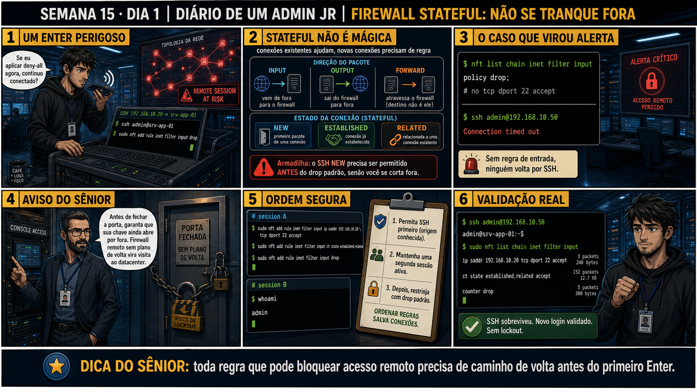

DIARIO DE UM ADMIN JR. | FASE 2 — REDES, DO IP AO DIAGNÓSTICO
🧠 Antes de começar — 20 segundos de memória (Semana 14)
1. Na Semana 14 você viu um escopo DHCP ficar sem endereços e travar vários clientes de uma vez. Sem olhar: o que os DIVERSOS chamados simultâneos indicavam sobre a causa provável? 2. Hoje o risco muda de "vários clientes travados" pra "eu mesmo travado fora do servidor". Isso pede mais ou menos cuidado antes de agir?
1. Que a causa era compartilhada (o escopo cheio), não algo local a um único cliente — sintomas simultâneos apontam pra uma causa central. 2. Muito mais cuidado — hoje um único comando de firewall mal ordenado pode cortar o SEU PRÓPRIO acesso remoto à VM, sem ninguém mais pra te ajudar a reverter de fora.
🔗 Conecta com a Semana 13 (portas e sockets): Você já sabe diagnosticar firewall
sem desligá-lo. Hoje o risco muda de figura: aplicar uma regra de firewall remotamente, sem plano de volta,
pode derrubar a própria sessão que você está usando pra aplicar a regra — igual ao isolate da Semana 11, mas
agora com nftables.
🔓 Privilégio de hoje: entender que firewall stateful não é mágica. Você ganha
a distinção crítica entre conexões NEW (novas, precisam de regra explícita), ESTABLISHED (já em andamento) e
RELATED — e a armadilha: aplicar um deny-all sem primeiro permitir SSH NEW te tranca fora imediatamente.
Semana 15 · Dia 1 | Nível Júnior — Redes
Firewall Stateful: Não se Tranque Fora
toda regra que pode bloquear acesso remoto precisa de caminho de volta antes do primeiro Enter
ANTES DE ALTERAR, OBSERVE. DEPOIS DE ALTERAR, VALIDE.

1. O chamado
#6301PRIORIDADE ALTA10:00aberto por: você mesmo, antes de aplicar a mudança
host: srv-app-02 · serviço: acesso SSH remoto
"Se eu aplicar deny-all agora, continuo conectado?"
Pergunta certa, feita tarde demais — o comando "drop" já está digitado na tela. Sem uma regra explícita permitindo SSH antes do drop padrão, o que acontece na próxima tentativa de conexão?
💡 Passa o mouse nas palavras destacadas pra ver uma dica rápida — clica se quiser a explicação completa com analogia.
2. O sênior te conta
Semana passada, outro ticket
Um colega novo, animado pra "deixar tudo seguro", rodou sudo nft add rule inet filter input
drop num servidor de produção acessado só por SSH remoto — sem nenhuma regra de accept antes. A
sessão dele congelou no meio da linha. Sem console local disponível, o servidor ficou inacessível até
alguém ir fisicamente ao datacenter reconectar um monitor e reverter a regra. Duas horas de downtime por
uma linha de comando na ordem errada.
O que eu ensinei depois: firewall stateful rastreia ESTADO das conexões (NEW, ESTABLISHED, RELATED), não
intenção. "Stateful" não significa "sabe que aquele SSH é meu" — uma conexão nova ainda precisa de regra
explícita de accept, sempre, antes do drop padrão existir. E nunca aplique policy drop sem console
disponível como plano B — é a mesma lição do isolate via SSH da Semana 11, agora em firewall.
3. Decodificador de conceitos
Clica em qualquer termo pra ver a definição completa e uma analogia do dia a dia:
4. Ferramentas e leitura da evidência
Direção
Significado
INPUT
Tráfego que vem de fora, entrando no próprio firewall/servidor.
OUTPUT
Tráfego que sai do firewall/servidor para fora.
FORWARD
Tráfego que atravessa o firewall, com destino a outra máquina.
--- ANTES (armadilha) ---
$ sudo nft list chain inet filter input
policy drop;
# no tcp dport 22 accept <-- FALTA essa regra!
$ ssh admin@192.168.10.50
Connection timed out <-- sem regra de entrada, ninguém volta por SSH
--- ORDEM SEGURA (session A: acesso já ativo) ---
$ sudo nft add rule inet filter input ip saddr 192.168.10.20 \
tcp dport 22 accept
$ sudo nft add rule inet filter input ct state established,related accept
$ sudo nft add rule inet filter input drop
--- VALIDAÇÃO REAL (nova tentativa) ---
$ ssh admin@192.168.10.50
admin@srv-app-01:~$ [OK, sem lockout]
5. Laboratório guiado — marca conforme for testando
⚠️ Este laboratório precisa de uma segunda máquina/VM real (ou de hardware/reboot que um terminal online não reproduz) — pratique no seu ambiente virtual. Não está disponível no terminal Killercoda.
Segurança: execute os testes apenas em VM descartável e confirme nomes de discos, hosts e arquivos antes de cada comando.
Ação: com acesso via CONSOLE (não SSH), observe a chain input atual.
$ sudo nft list chain inet filter input
🔍 Detalhar esse comando
nft list chain
Mostra as regras atuais de uma chain específica do nftables, sem alterar nada — comando de leitura, seguro para rodar antes de qualquer mudança.
inet filter input
Localização da chain: table inet (IPv4+IPv6), chain input (tráfego destinado à própria máquina).
Resultado esperado: chain vazia ou com policy accept (estado inicial seguro).
Por quê: começar por console, não SSH, é o que te protege de um lockout durante o próprio laboratório.
Cilada comum: fazer esse laboratório inteiro só por SSH, sem console de backup — é exatamente o risco que a aula ensina a evitar.
Ação: adicione as regras na ordem correta — SSH, depois established/related, depois drop.
Permite conexões NOVAS de origem específica (saddr) na porta 22 — a regra que garante que você, especificamente, consegue entrar.
ct state established,related accept
Permite pacotes de conexões JÁ estabelecidas ou relacionadas a elas — é o que torna o firewall stateful: sem essa regra, até o tráfego de retorno da sua própria sessão seria bloqueado.
drop
Regra final: descarta tudo que não casou com nenhuma regra anterior — o "nega por padrão" que só é seguro por causa das duas regras acima virem ANTES dele.
Resultado esperado: três regras adicionadas com sucesso, chain agora com policy drop efetiva.
Por quê: essa ordem exata é o que garante que o drop nunca seja avaliado antes da regra que te permite entrar de novo.
Cilada comum: inverter a ordem "só pra testar rápido" — mesmo em laboratório, isso reproduz o lockout real.
Ação: abra uma NOVA sessão SSH pra testar se a regra realmente permite conexões novas.
$ ssh admin@IP_DA_VM
🔍 Detalhar esse comando
ssh admin@IP_DA_VM
Abre uma conexão SSH NOVA (não reaproveita nenhuma sessão existente) — o único jeito de testar de verdade se a regra recém-criada permite conexões NEW.
Resultado esperado: nova sessão conecta normalmente, sem timeout.
Por quê: testar com uma sessão NOVA (não a do console já aberto) é a única forma de validar que a regra funciona pra uma conexão NEW de verdade.
Cilada comum: confiar só na sessão de console já aberta e assumir que SSH também funciona — sessões diferentes, estados diferentes.
🧑🏫 Aqui entra o Mentor (em breve): se você se trancar fora acidentalmente numa VM de laboratório, este é o ponto onde o chat com o Sênior-IA vai ajudar a recuperar via console.
Se o seu resultado foi diferente
"Connection timed out" mesmo depois das três regras aplicadas na ordem certa → confirme com echo $SSH_CONNECTION na sessão de console que o IP de origem usado na regra é EXATAMENTE o mesmo da nova tentativa — VPNs e NAT podem mudar o IP de origem visto pelo servidor.
Ação: confira os contadores de pacotes/bytes de cada regra.
$ sudo nft list chain inet filter input
🔍 Detalhar esse comando
nft list chain
Mostra as regras atuais de uma chain específica do nftables, sem alterar nada — comando de leitura, seguro para rodar antes de qualquer mudança.
inet filter input
Localização da chain: table inet (IPv4+IPv6), chain input (tráfego destinado à própria máquina).
Resultado esperado: contadores diferentes de zero nas regras de SSH e established/related.
Por quê: contador subindo prova que ESSA regra específica é a responsável pelo tráfego passando, não uma coincidência de outra condição.
Cilada comum: assumir que "SSH funcionou, então a regra está certa" sem checar o contador — pode ter sido outra regra (ou nenhuma) que deixou passar.
Ação: documente a ordem aplicada e a validação completa.
# ordem: SSH accept -> established,related accept -> drop
# validação: nova sessão SSH conectou (sem lockout)
# contadores: > 0 nas regras de accept
Resultado esperado: checklist completo sem nenhum lockout — reproduzindo o painel 6 da prancha de hoje.
Por quê: registrar a ordem exata usada é o que vira referência confiável pra próxima mudança de firewall, sua ou de outro técnico.
Cilada comum: aplicar a mesma sequência de cabeça da próxima vez, sem checklist — um IP de origem digitado errado já é o suficiente pra repetir o lockout.
6. Antes de ver as opções — tenta responder
🧠 Recall ativo: quais são os três estados de conexão que um firewall stateful reconhece, e por
que "stateful" não significa "seguro por padrão"?
NEW
(primeiro pacote de uma conexão),
ESTABLISHED
(conexão já em andamento) e
RELATED
(relacionada a uma existente). Firewall stateful ajuda conexões JÁ estabelecidas a continuarem — mas uma
conexão NEW, como um SSH que ainda não começou, precisa de regra explícita de permissão, sempre.
QUESTÃO 1 de 3
7. Questão comentada — clica numa alternativa
Você precisa aplicar um firewall com policy drop padrão num servidor acessado só
remotamente via SSH. Qual é a ORDEM correta de regras para não se trancar fora?
💡 Analogia do Sênior para Fixar: O princípio fundamental de 01 FIREWALL STATEFUL TRAVAR SSH é como o alicerce de sustentação de um viaduto: garante que a estrutura de comunicação suporte alto tráfego sem colapsar.
QUESTÃO 2 de 3 — cenário de erro real
7.1 A regra de SSH foi aplicada primeiro, depois established/related, depois o drop. A sessão
sobreviveu
O painel 6 da prancha de hoje mostra nft list chain confirmando os contadores das regras (packets,
bytes) crescendo.
Por que confirmar os contadores de pacotes/bytes nas regras é parte da
validação, além de só testar se o SSH funciona?
💡 Analogia do Sênior para Fixar: Diagnosticar anomalias em 01 FIREWALL STATEFUL TRAVAR SSH é como o eletricista usando o multímetro no quadro de disjuntores: mede a passagem de sinal no ponto exato da falha.
QUESTÃO 3 de 3 — detalhe que confunde todo iniciante
7.2 "Se meu firewall é stateful, ele já sabe automaticamente que SSH é meu e deve permitir?"
Um colega acha que "stateful" significa que o firewall reconhece intenções, não só estados de conexão.
Por que essa suposição está errada?
💡 Analogia do Sênior para Fixar: Aplicar as boas práticas de 01 FIREWALL STATEFUL TRAVAR SSH é como o protocolo de segurança da aviação: elimina pontos únicos de falha e garante previsibilidade operacional.
8. Procedimento profissional
Antes de aplicar policy drop, garanta uma regra explícita permitindo o acesso remoto atual.
Adicione a regra de accept para established,related, mantendo conexões em andamento.
Só então aplique o drop padrão — nessa ordem exata, nunca invertida.
Teste a partir de uma nova tentativa de conexão, não confiando só na sessão já aberta.
Confirme os contadores de pacotes/bytes nas regras pra validar que elas estão em uso real.
Prevenção
Nunca aplique policy drop remotamente sem um console de backup disponível — SSH via
KVM/iDRAC/console de provedor cloud, ou acesso físico. Trate isso como regra inegociável, igual ao isolate
via SSH da Semana 11: uma sessão remota nunca é o único caminho de volta.
9. Validação e encerramento
A regra de SSH foi aplicada antes do drop padrão, nunca depois.
established,related foi permitido pra manter conexões em andamento.
Uma nova sessão (não a atual) validou que o acesso remoto continua funcionando.
Os contadores das regras confirmaram que estão sendo realmente usadas.
Rollback e limites
Se algo der errado e a sessão travar mesmo assim, o único caminho de volta é o
console local/da VM — por isso trabalhar com console disponível é obrigatório ao aplicar mudanças de
firewall remotamente pela primeira vez. Regras nftables podem ser removidas com nft delete rule, usando o
handle exibido por nft -a list.
💡 Sobre repetição espaçada: "toda regra que pode bloquear acesso remoto
precisa de caminho de volta" conecta diretamente com a Semana 11 (isolate via SSH pode derrubar a própria
sessão) — mesmo tipo de autossabotagem remota, agora em firewall. O Anki vai conectar os dois.
10. Resposta final
Alternativa correta: A. Nesta aula, a ordem certa foi SSH da origem
conhecida → established,related → drop padrão, nessa sequência exata. O ponto central do caso é este:
toda regra que pode bloquear acesso remoto precisa de caminho de volta antes do primeiro Enter.
🔓 O que você desbloqueou hoje
Capacidade de aplicar firewall stateful sem se trancar fora do próprio
servidor. Amanhã você aprende a base de organização do nftables — tables, chains e regras — e por que
backup e rollback testado são obrigatórios antes de qualquer mudança de firewall em produção.